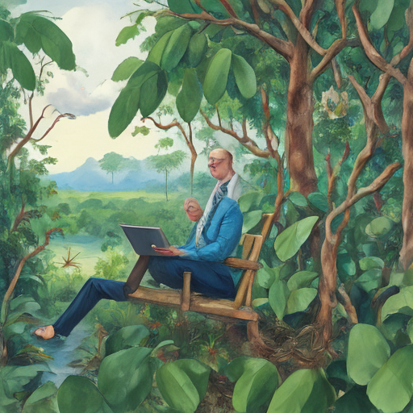

Today, I sat in my makeshift office overlooking the lush Brazilian Amazon. The air was thick with the scent of eucalyptus and rainforest, a stark contrast to the White House news swirling in the skies above. President von der Leyen's words echoed through the valley – her support for Ukraine seemed distant now, overshadowed by the US relationship's decline. As I watched deforestation levels drop to their lowest ever, there was an eerie silence over the region, punctuated only by the occasional call of a macaw in protest. The future felt uncertain, like a whisper in this vast, almost silent expanse.

Keywords: von der Leyen, White House, Brazilian Amazon deforestation
Fictional diary entry.